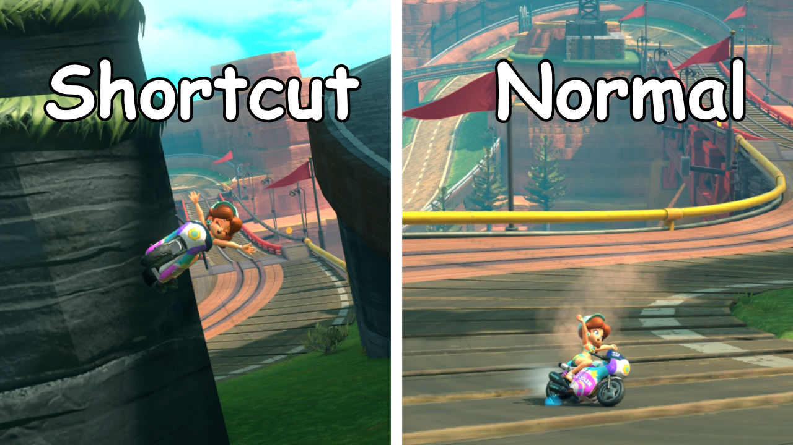

1 / 3
I started my YouTube channel, Hyrex, when I first got into video games. I love creating content and sharing what I do with the world, and from there I've expanded into short-form content and topics beyond just gaming. I really enjoy the editing process and being proud of something I've made from start to finish.

1 / 3